From years 2017-2019, I participated in the Canon Photomarathon with my CCA. The objective of the competition is to ultilise the given three hours wander around the island to find capture a photo which suits the three assigned themes the best. During the Canon Photomarathon XVII in 2019, my CCA did the school proud by being the year's champions in the School Challenge section, obtaining the highest average judge score among all the other participating schools in Singapore.
| 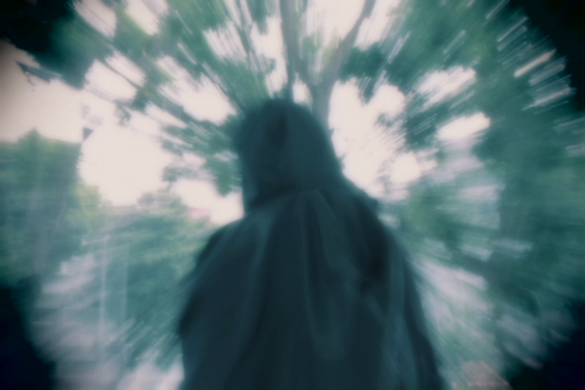 | 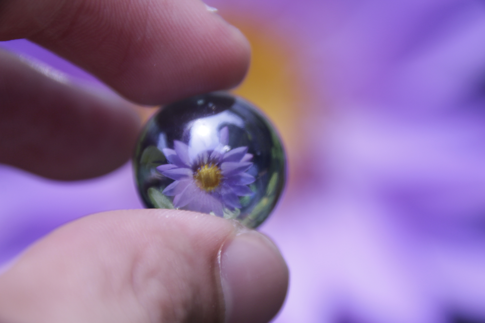 |
| 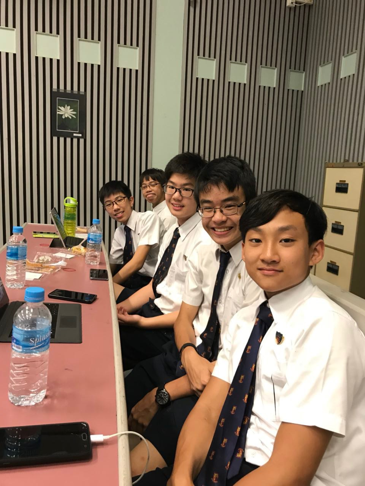 |
To expand our boundaries of how my team of cyber wellness ambassadors can impact the school, we took part in the National Cyber Wellness Advocacy Challenge organised by Crescent Girls' School, where we hope to get inspirations from other schools on how they plan to outreach their knowledge of cyber wellness to influence their schools to be safe online. My team entered the preliminary round where we covered the areas of content producers and the validity of the content. We managed to get into the finals, where we need to plan an outreach to the school based on the topic of fake news and online content.
| 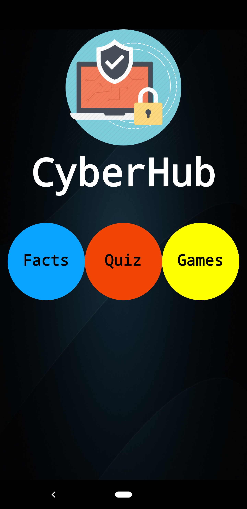 | 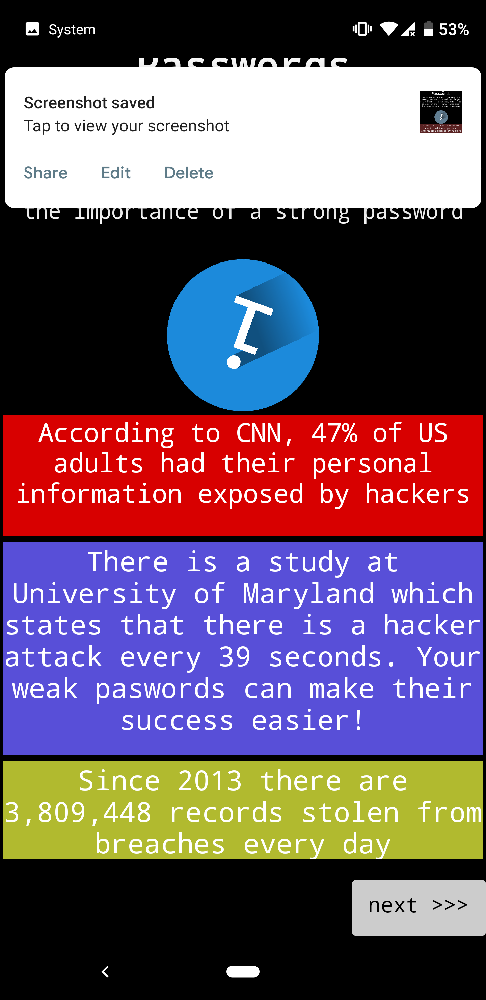 | |
| 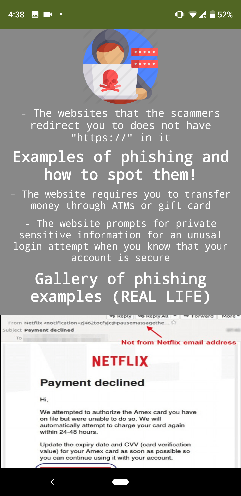 | 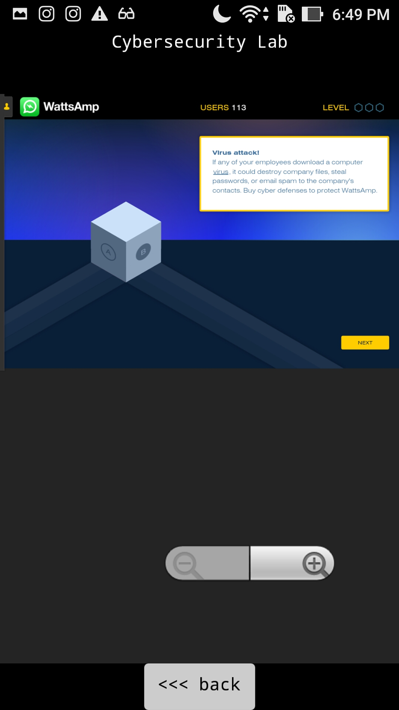 | 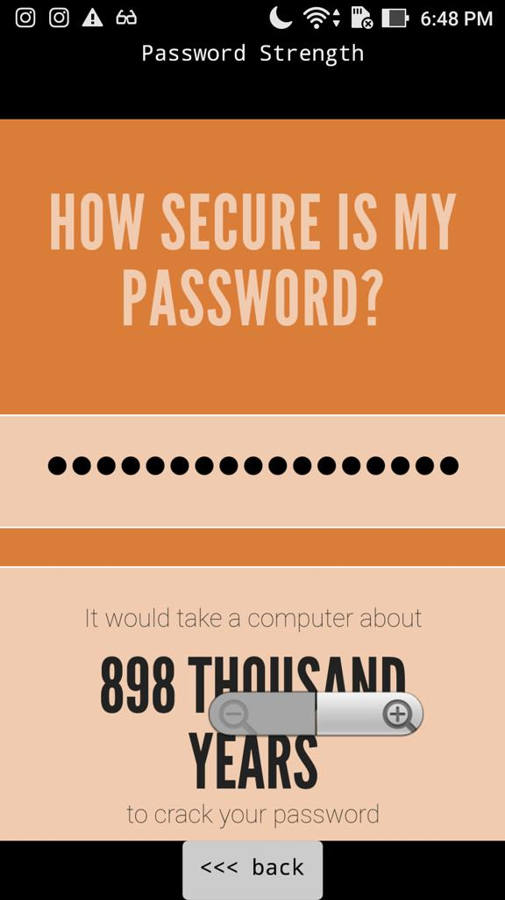 |
In this competition organised by Nanyang Polytechnic, my team and I were task to designed an app to educate users on basic cyber security information such as phishing, scams and encryption. Using MIT App Inventor 2, we developed a simple user interface filled with separate sections for different topics, a quiz and mini games.
With the cooperation, coordination and determination by my team, we managed to take home the Best Presentation Award from the competition.
| 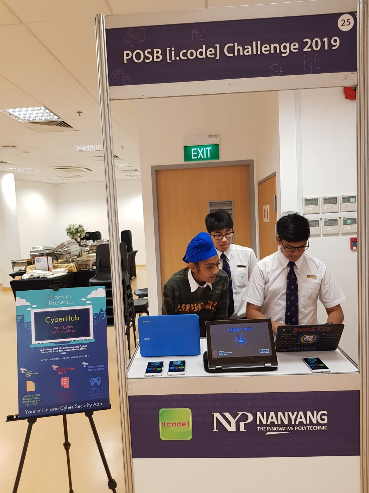 | 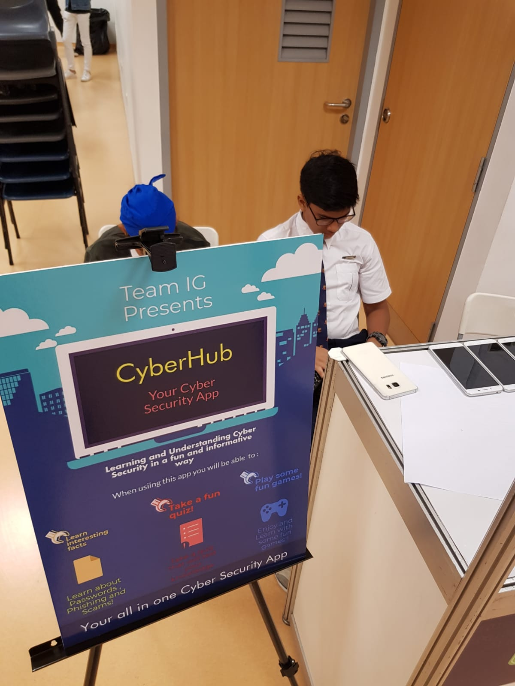 | 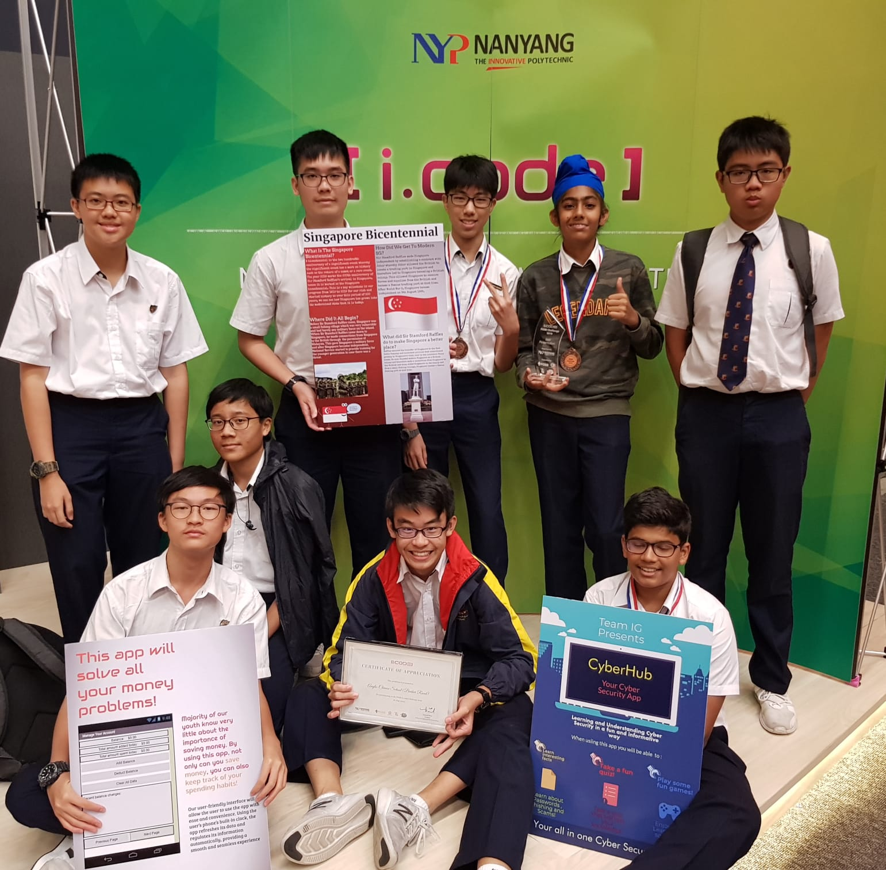 |